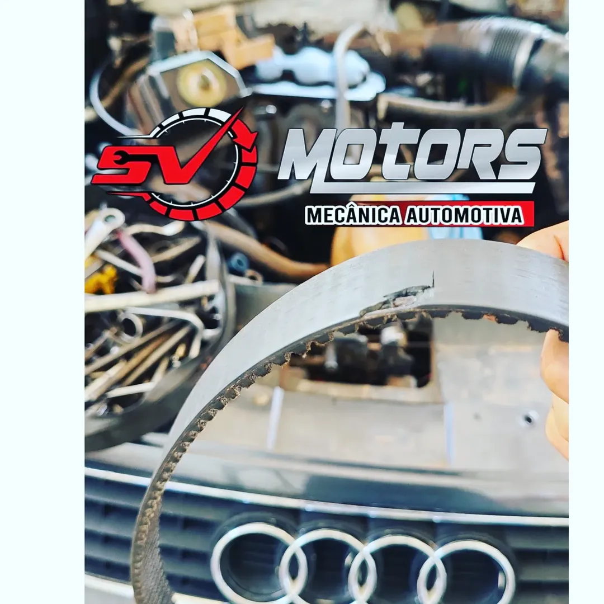
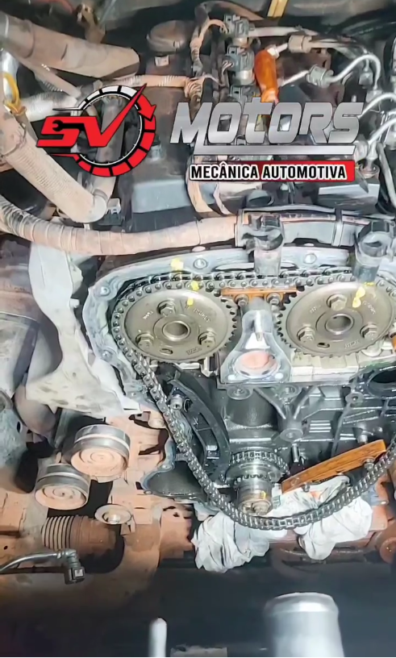
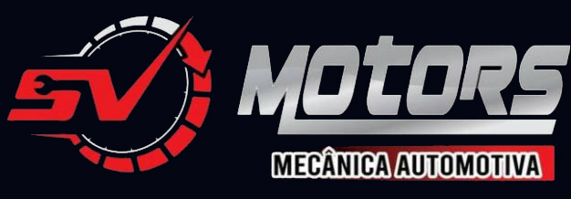
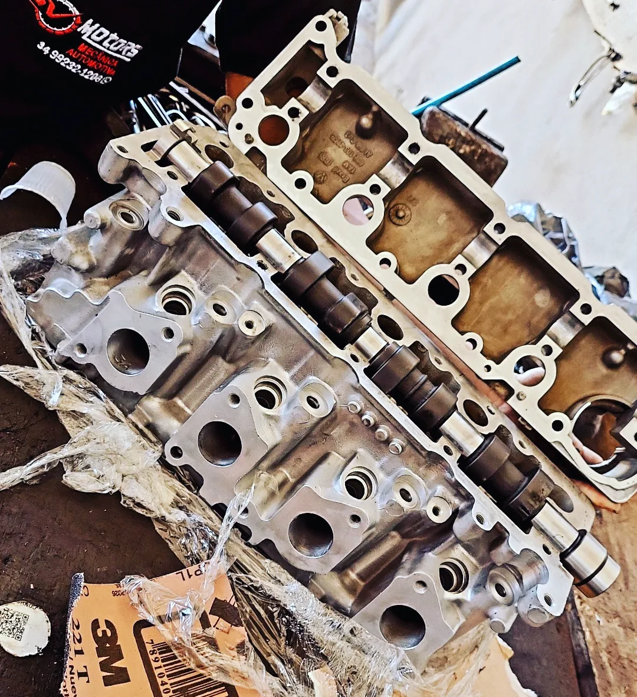

Galeria da Oficina





Araguari - MG
⭐⭐⭐⭐⭐
4.9 de avaliação no Google
(31 avaliações)

A SV Motors mecânica automotiva é uma oficina especializada em manutenção automotiva em Araguari - MG. Nosso compromisso é oferecer serviços mecânicos com qualidade, transparência e rapidez para garantir a segurança e o desempenho do seu veículo.
Contamos com profissionais experientes, equipamentos modernos e atendimento direto ao cliente para identificar problemas com precisão e realizar reparos confiáveis.
Se você procura uma oficina mecânica de confiança em Araguari, a SV Motors está pronta para atender você com eficiência e profissionalismo.
Troca de óleo e filtros para manter o motor do seu veículo em perfeito funcionamento.
Manutenção completa do sistema de freios garantindo segurança na condução.
Reparo e manutenção de suspensão para conforto e estabilidade do veículo.
Análise eletrônica para identificar falhas no motor e sistemas do carro.
Reparo em sistemas elétricos, bateria, alternador e componentes eletrônicos.
Serviços de alinhamento, balanceamento e manutenção de pneus.


★★★★★
"Oficina que realmente passa confiança. Resolveram o problema do meu carro sem enrolação."
Carlos Souza
★★★★★
"Serviço de suspensão ficou excelente. Atendimento rápido e preço justo."
Marcos Oliveira
★★★★★
"Profissionais honestos e muito competentes. Recomendo para quem precisa de mecânico em Araguari."
Juliano Ferreira
📍 Av. Cel. Belchior de Godói, 1480
Bairro Goiás
Araguari - MG
CEP: 38442-204
Abrir no Google Maps